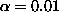
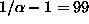
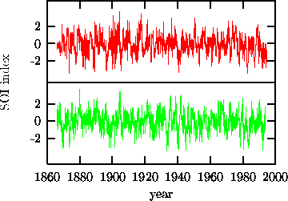
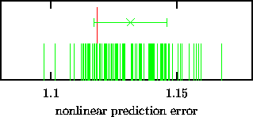

As an illustration let us perform a statistical test for nonlinearity on a monthly time series of the Southern Oscillation Index (SOI) from 1866 to 1994 (1560 samples). For a reference on analysis of Southern Oscillation data see Graham et al. [32]. Since a discussion of this climatic phenomenon is not relevant to the issue at hand, let us just consider the time series as an isolated data item. Our null hypothesis is that the data is adequately described by its single time probability distribution and its power spectrum. This corresponds to the assumption that an autoregressive moving average (ARMA) process is generating a sequence that is measured through a static monotonic, possibly nonlinear observation function.
For a test at the 99% level of significance (), we generate a collection of  surrogate time series which share the single time sample probability distribution and the periodogram estimator with the data. This is carried out using the iterative method described in Sec. 4.3 above (see also Ref. [30]). Figure 4 shows the data together with one of the 99 surrogates.
As a discriminating statistics we use a locally constant predictor in embedding space, using three dimensional delay coordinates at a delay time of one month. Neighbourhoods were selected at 0.2 times the rms amplitude of the data. The test is set up in such a way that the null hypothesis may be rejected when the prediction error is smaller for the data than for all of the 99 surrogates. But, as we can see in Fig. 5, this is not the case. Predictability is not significantly reduced by destroying possible nonlinear structure. This negative result can mean several things. The prediction error statistics may just not have any power to detect the kind of nonlinearity present. Alternatively, the underlying process may be linear and the null hypothesis true. It could also be, and this seems the most likely option after all we know about the equations governing climate phenomena, that the process is nonlinear but the single time series at this sampling covers such a poor fraction of the rich dynamics that it must appear linear stochastic to the analysis.

Figure: Monthly values of the Southern Oscillation Index (SOI) from 1866 to 1994 (upper trace) and a surrogate time series exhibiting the same auto-covariance function (lower trace). All linear properties of the fluctuations and oscillations are the same between both tracings. However, any possible nonlinear structure except for a static rescaling of the data is destroyed in the lower tracing by the randomisation procedure.

Figure: Nonlinear prediction error measured for the SOI data set (see Fig. 4) and 99 surrogates. The value for the original data is plotted with a longer impulse. The mean and standard deviation of the statistic obtained from the surrogates is also represented by an error bar. It is evident that the data is not singled out by this property and we are unable to reject the null hypothesis of a linear stochastic stationary process, possibly rescaled by a nonlinear measurement function.
Of course, our test has been carried out disregarding any knowledge of the SOI situation. It is very likely that more informed measures of nonlinearity may be more successful in detecting structure. We would like to point out, however, that if such information is derived from the same data, or literature published on it, a bias is likely to occur. Similarly to the situation of multiple tests on the same sample, the level of significance has to be adjusted properly. Otherwise, if many people try, someone will eventually, and maybe accidentally, find a measure that indicates nonlinear structure.